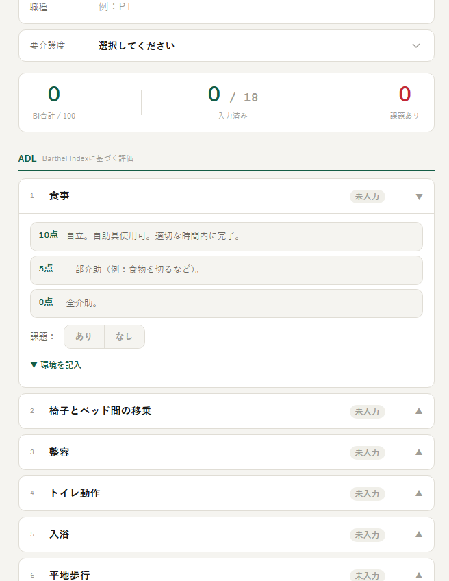
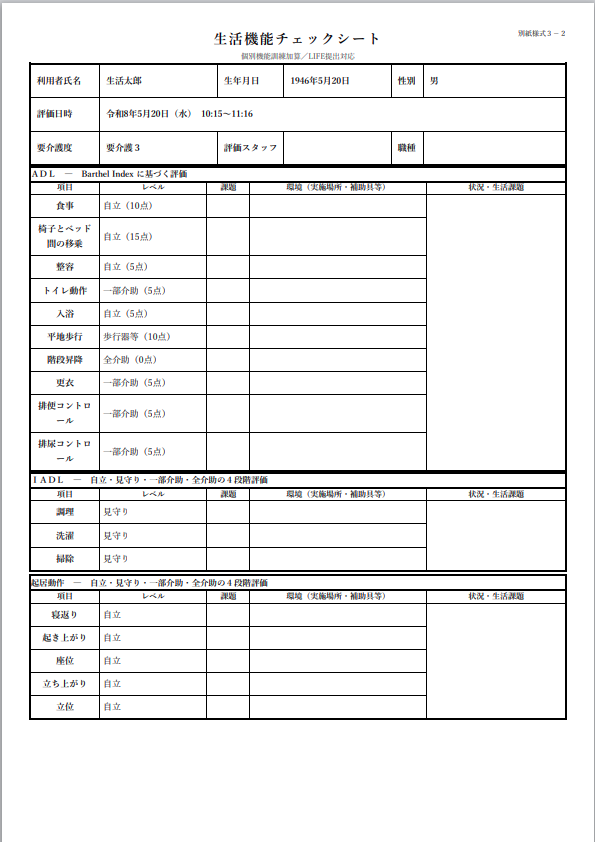

デイサービスで個別機能訓練加算(Ⅱ)を算定する場合、居宅を訪問して作成しなければならない書類が「生活機能チェックシート（別紙様式3-2）」です。LIFEへの提出も必要なこの書類は、書き方がわかりにくいと感じている機能訓練指導員の方も多いのではないでしょうか。この記事では、様式の構成・各項目の書き方・よくある疑問点を解説し、スマホで入力してそのままA4印刷できる無料ツールも紹介します。


生活機能チェックシートとは
生活機能チェックシート（別紙様式3-2）は、通所介護の個別機能訓練加算(Ⅱ)を算定する際に、利用者の居宅を訪問して記録する評価票です。2021年（令和3年）の介護報酬改定で「居宅訪問チェックシート」から名称が変更され、BIをベースにしたADL評価が組み込まれました。
| 正式名称 | 生活機能チェックシート（別紙様式3-2） |
|---|---|
| 使用場面 | 通所介護の個別機能訓練加算(Ⅱ)の算定時・居宅訪問時 |
| 作成頻度 | 居宅訪問ごと（3か月に1回以上） |
| LIFE提出 | 必須（個別機能訓練加算(Ⅱ)算定の場合） |
| 評価構成 | ADL（10項目）・IADL（3項目）・起居動作（5項目） |
様式の構成と評価の考え方
ADL（10項目）：Barthel Indexに基づく評価
ADLの10項目は、Barthel Index（BI）の基準に準拠しています。食事・移乗・整容・トイレ動作・入浴・平地歩行・階段昇降・更衣・排便コントロール・排尿コントロールの10項目を、点数付きの選択肢で評価します。
一部介助（5点）：食物を切るなど、一部に介助が必要。
全介助（0点）：全面的な介助が必要。
デイサービスで行う評価ではなく、居宅での生活実態を確認する場であることを意識してください。「デイではできているが自宅では介助が必要」という状況を正確に把握することが目的です。
IADL（3項目）：4段階評価
調理・洗濯・掃除の3項目を「自立・見守り・一部介助・全介助」の4段階で評価します。BIのような点数はなく、実態に合った段階を選択します。
起居動作（5項目）：4段階評価
寝返り・起き上がり・座位・立ち上がり・立位の5項目を同様に4段階で評価します。ベッドや手すりなどの補助具の使用状況も「環境」欄に記録します。
よくある疑問と注意点
課題の「あり・なし」はどう判断する？
各項目に「課題あり・なし」のチェック欄があります。自立していても生活課題がある場合（例：転倒リスクがある、将来的に悪化が見込まれる）は「あり」を選択します。点数や段階だけで機械的に判断せず、生活全体を見た上で判断してください。
状況・生活課題欄には何を書く？
実施場所・使用している補助具・介助者の状況・本人の意欲や言葉などを具体的に記録します。「自宅のユニットバスで長男が介助」「杖を使用するが段差での転倒リスクあり」など、後で計画書に活かせる情報を残しましょう。
スマホで入力してそのままA4印刷できる無料ツール
このサイトでは、生活機能チェックシート（別紙様式3-2）に準拠した無料の入力・印刷ツールを提供しています。
- 登録不要・アプリ不要・ブラウザだけで使える
- スマホ・タブレット・PCすべてに対応
- ADL（BI点数付き）・IADL・起居動作を網羅
- 入力データはブラウザ内で完結（外部送信なし）
- 印刷時は明朝体・縦1列テーブルで別紙様式3-2に準拠したレイアウトで出力
- 完全無料